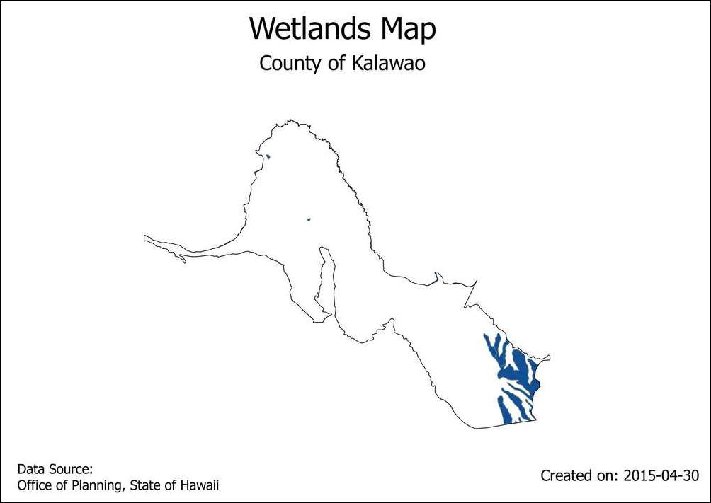
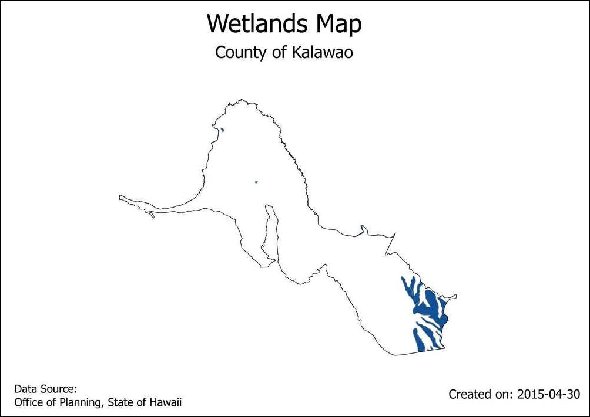

Tự động thành lập bản đồ bằng công cụ Print Composer Atlas¶
Cảnh báo
A new version of this tutorial is available at Automating Map Creation with Print Layout Atlas (QGIS3)
Nếu cơ quan của bạn xuất bản các bản đồ in hay trực tuyến, thường bạn sẽ phải tạo ra rất nhiều bản đồ với cùng một mẫu - có thể là mỗi mẫu cho cho từng đơn vị hành chính hay khu vực. Xây dựng các bản đồ này một cách thủ công sẽ tốn kém thời gian và nếu bạn muốn cập nhật thường xuyên, công việc này sẽ rất vất vả. QGIS có một công cụ tên là "Atlas" có thể giúp bạn tạo ra các mẫu bản đồ và dễ dàng xuất hàng loạt bản đồ cho các vùng địa lý khác nhau. Nếu bạn không quen thuộc với các công cụ trên Print Composer, bạn nên xem tài liệu hướng dẫn Thành lập bản đồ .
Tổng quan về nhiệm vụ¶
Tài liệu hướng dẫn cách lập bản đồ đất ngập nước cho từng hạt trong bang Hawaii
Các kỹ năng bạn sẽ học được¶
Làm thế nào để sử dụng kết xuất "Inverted Polygon" để tạo màu các vùng ngoài polygon đã chọn.
Làm thế nào để dùng câu lệnh trong kết xuất "Rule Based" thể hiện riêng đối tượng hiện tại trong Atlas.
Sử dụng các câu lệnh để tạo các nhãn linh hoạt trong Print Composer.
Nhận dữ liệu¶
Chúng ta sẽ sử dụng GIS Data Layers từ Ủy ban Quy hoạch - Bang Hawaii
Tải lớp đất ngập nước 'Wetlands<http://files.hawaii.gov/dbedt/op/gis/data/HI_Wetlands.shp.zip>`_ từ Biologic and Ecologic.
Tải lớp Census County Boundaries 2010 từ Cultural and Demographic.
Để thuận tiện, bạn có thể tải trực tiếp các dữ liệu mẫu sử dụng trong tài liệu hướng dẫn này theo đường dẫn sau.
Nguồn dữ liệu [HAWAII]
Các bước thực hiện¶
Mở QGIS và vào .

Tìm tới file
HI_Wetlands.shp.zipvà chọn Open.

Chọn lớp
HI_Wetlands_Polyvà bấm chuột OK.
Bạn sẽ thấy các polygons thể hiện vùng đất ngập nước của bang Hawaii. Do chúng ta muốn lập các bản đồ riêng biệt về đất ngập nước cho từng hạt trong bang, chúng ta sẽ cần lớp ranh giới hạt. Hãy vào menuselection:Layer --> Add Layer --> Add Vector Layer và truy vào tệp
county10.shp.zip. Bấm chuột Open.

Vào .

Để trống trường tên bản đồ và bấm chuột OK.
Vào .
Kéo hình chữ nhật trong khi giữ nguyên phím trái chuột khi muốn chèn bản đồ.

Scroll down in the Item Properties tab and check the Controlled by atlas box. This will indicate the composer that the extent of the map displayed in this item will be determined by the
Atlastool.
Switch to the Atlas generation tab. Check the Generate an atlas box. Select the
county10as the Coverage layer. This will indicate that we want to create 1 map each for every polygon feature in thecounty10layer. You can also check the Hidden coverage layer so that the features themselves will not appear on the map.

You will notice that the map image does not change after configuring the Atlas settings. Go to .

Now you will see the map refresh and show how individual map will look like. Notice that it shows the current feature number from the coverage layer at the bottom right.
Bạn có thể xem trước bản đồ cho từng polygon của các hạt. Đi tới .

Atlas sẽ kết xuất bản đồ theo khuôn khổ của đối tượng kế tiếp 'next feature' trong lớp bản đồ.

Thêm nhãn vào bản đồ. Vào .
Trong Item properties, bấm Insert an expression....

The label of the map can use the attributes from the coverage layer.he
concatfunction is used to join multiple text items into a single text item. In this case we will join the value of theNAME10attribute of thecounty10layer with the textCounty of. Add an expression like below and click OK.
concat('County of ', "NAME10")
Tùy biến cỡ chữ.

Thêm vào một chú dẫn khác và nhập chữ
Wetlands Mapphía dưới Main properties. Do không có yêu cầu biểu thị đặc biệt gì nên dòng chữ này sẽ được giữa nguyên trên mọi bản đồ.

Đi tới và kiểm tra xem các chú dẫn của bản đồ có đúng hay không. Bạn sẽ nhận thấy bản đồ vùng ngập nước có các polygon trải ra phía biển trông không đẹp mắt. Chúng ta có thể thay đổi cách hiển thị để các vùng ngoài ranh giới hạt bị ẩn đi.

Chuyển tới cửa sổ chính của QGIS. Bấm chuột phải vào lớp
county10và chọn Properties.
Trong thanh Style , chọn kết xuất Inverted polygons . Phép kết xuất này sẽ tạo ra kiểu hiển thị bên ngoài của polygon - chứ không phải ở bên trong. Lựa chọn màu trắng cho màu nền và bấm OK.
Switch to the Print Composer window. If we want the effect of the inverted polygons to show, we need to uncheck the Hidden coverage layer box under Atlas generation. You will now see that the rendered image is clean and areas outside the coverage polygon is not visible.
There is one problem though. You can see areas of the map that are outside the coverage layer boundary but still visible. This is because Atlas doesn't automatically hide other features. This can be useful in some cases, but for our purpose, we only want to show wetlands of the county whose map is being generated. To fix this, switch back to the main QGIS window and right-click the
county10layer and select Properties.
Trogn thanh Style , chọn kết xuất Rule-based làm Sub renderer. Bấm đúp chuột vào vùng dưới Rule.
Bấm vào nút ... cạnh Filter.
In the Expression string builder, expand the Atlas group of functions. The
$atlasfeatureidfunction will return the currently selected feature. We will construct an expression that will select only the currently selected Atlas feature. Enter the expression as below:
$id = $atlasfeatureid

Back in the Print Composer window, click the Update preview button under Item properties tab to see the changes. Notice that now only the area covering the county boundary is shown.

Chúng ta sẽ thêm vào một nhãn động để thể hiện ngày tháng hiện tại. Đi đến và lựa chọn vùng trên bản đồ. Bấm vào nút Insert an expression .
Mở rộng nhóm chức năng Date and Time và bạn sẽ thấy chức năng
$now. Đây là chức năng hiển thị thời gian hiện tại trên hệ thống. Chức năngtodate()sẽ chuyển đổi thời gian này thành chuỗi ký tự ngày tháng. Nhập vào hàm như sau:
concat('Created on: ', todate($now))
Thêm vào một chú thích về nguồn dữ liệu. Bạn cũng có thể thêm vào các yếu tố bản đồ khác như mũi tên chỉ hướng bắc, thước tỉ lệ, v.v... như được mô tả trong tài liệu hướng dẫn Thành lập bản đồ .
Khi đã đồng ý với bố cục bản đồ, đi tới .
Lựa chọn đường dẫn thư mục trong máy tính và bấm chuột Choose.
Công cụ Atlas sẽ lặp lại từng đối tượng trong lớp dữ liệu và tạo ra các ảnh bản đồ riêng biệt dựa trên các mẫu được tạo ra. Bạn có thể thấy các ảnh bản đồ trong thư mục khi quá trình lặp hoàn tất.

Đây là các ảnh bản đồ tham chiếu.


 
